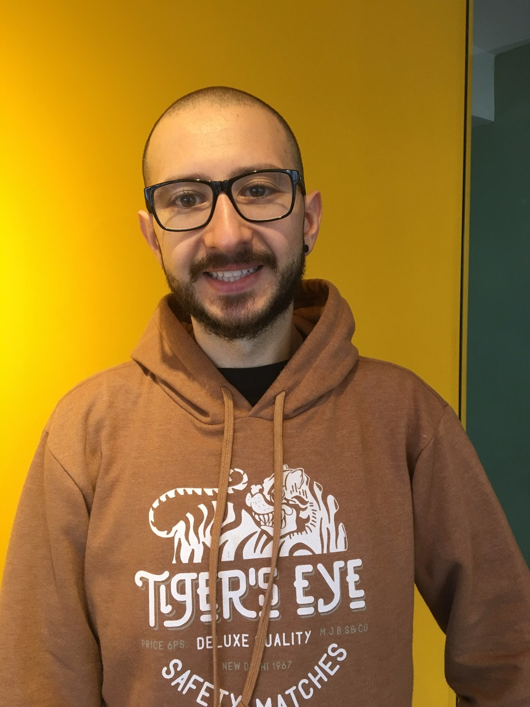

Sobre
A Conferência Brasileira de PostgreSQL, denominada PGBR, é o principal evento organizado pela Comunidade Brasileira de PostgreSQL. Trata-se de um acontecimento que reúne desenvolvedores, usuários e pesquisadores da tecnologia de banco de dados livre e de código aberto PostgreSQL.
A conferência PGBR caracteriza-se por oferecer aos participantes uma vasta programação, que inclui palestras de alto nível técnico, ministradas por palestrantes reconhecidos nacional e internacionalmente. Atividades especiais como tutoriais, Hacker Talks (discussões técnicas destinadas a fomentar o desenvolvimento do PostgreSQL), Lightning Talks (seção de apresentações curtas, de no máximo cinco minutos), e painéis acadêmicos.
Já foram realizadas seis edições do PGBR, nos anos de 2007, 2008, 2009, 2011, 2013 e 2015. As primeiras edições do evento foram realizadas nas cidades de São Paulo (2007 e 2011), Campinas (2008 e 2009) e Porto Velho (2013). Em torno de 150 profissionais da área de Tecnologia da Informação participaram do último PGBR, realizado em 2015 em Porto Alegre.
Em 2017 no PGBR vários temas de relevância serão abordados, tais como: casos de sucesso em empresas públicas e privadas, novidades da versão 10, técnicas avançadas de monitoramento, performance e tunning, alta disponibilidade, dentre outros.
A comunidade Brasileira de PostgreSQL tem o prazer de recebê-los de braços abertos, por isso não perca essa oportunidade e faça logo a sua inscrição.
Inscrições
As inscrições são realizadas no site da Eventize. Clique no link a abaixo pra prosseguir:
Local
Largo Vespasiano Julio Veppo 77, Centro, Porto Alegre, RS (Em frente a rodoviária)
Datas
- 10/04/2017 - Abertura da chamada para os trabalhos
- 09/07/2017 - Encerramento da chamada para os trabalhos
- 19/07/2017 - Notificação dos autores sobre trabalhos aceitos
- 30/07/2017 - Publicação das palestras aprovadas
- 10/08/2017 - Publicação da agenda oficial
Palestrantes
-
Álvaro Melo Atua Sistemas de Informação
Workshop: Do WAL a Replicação - 14/09 09:00
pg_rewind - Diminua seu downtime com ferramentas nativas - 15/09 13:30
-

Arthur Zanini Gauss Geotecnologia
Sistemas georreferenciados na pratica - 16/09 09:00
-
Carlos Almeida Gauss Geotecnologia
Sistemas georreferenciados na pratica - 16/09 09:00
-
Dickson Guedes Confesol
Hacking PostgreSQL - 15/09 10:00
Primeiros passos em Machine Learning no PostgreSQL - 15/09 14:30
-

Emerson Engroff
PG em Memoria - 16/09 10:00
-

Euler Taveira Timbira
Replicação Lógica no PostgreSQL 10 - 16/09 16:00
-
Fabio Telles Rodrigues Timbira
Workshop: Backup e Restore no PostgreSQL - 14/09 14:30
Particionamento de tabelas no PostgreSQL 10 - 15/09 16:00
-

Fabrízio de Royes Mello Timbira
Hacking PostgreSQL - 15/09 10:00
-

Felipe Pereira Dextra
PgBouncer - Pool, Segurança e Disaster Recovery - 16/09 09:00
-

Ivo Augusto
PostgreSQL e a arquitetura liquida das startups - 15/09 11:00
-
Lucas Viecelli Desbravador Software Ltda
Utilizando o PostgreSQL com micro-serviços e transações concorrentes - 16/09 11:00
-
Lucio Chiessi VORio Tecnologia da Informação
Entendendo e gerenciando Locks no PostgreSQL - 16/09 11:00
-
Luis Fernando Bueno CENSIPAM
PostGIS, OpenStreetMap e mapas na Web: O que fazer? Por que fazer? Como fazer? - 15/09 14:30
-
Maísa Silva Universidade Estadual de Campinas
O caminho das pedras entre DB2 e PostgreSQL - 16/09 13:30
-
Martín Marqués 2nd Quadrant
How to fail over, and live to tell the tale - 16/09 14:30
-

Matheus de Oliveira iFood
Workshop: Dicas de como escrever SQL performático - 14/09 09:00
PostgreSQL no mundo de micro-serviços, a experiência do iFood - 16/09 10:00
-
Rafael Thofehrn Castro 2ndQuadrant
Gerenciando PostgreSQL 10 com OmniDB - 15/09 17:00
-

Raul Diego de Queiroz Oliveira Datainfo Soluções em TI
Análise de performance usando o sistema operacional - 16/09 14:30
-
Ricardo Luís Ravazzolo PROCEMPA
Alta Disponibilidade com PostgreSQL, REPMGR e Pgpool - 16/09 13:30
-

Rodrigo Crespi CrespiDB
Azure Database for PostgreSQL - 15/09 13:30
-

Rubens Souza 2ndQuadrant
Workshop: Tomando conta do PostgreSQL com Ansible - 14/09 16:00
PostgreSQL e Raspberry Pi, ou o elefante e a framboesa - 15/09 16:00
-

Sebastian Webber Timbira
Hackeando a AWS: Como fazer o elefante voar sem gastar muito - 15/09 17:00
-

Thiago Avelino Nuveo
Elefante como API Rest - 15/09 11:00
-

William Ivanski 2ndQuadrant
Gerenciando Backups com o Barman - 15/09 10:00
Agenda
IMPORTANTE: A grade de programação poderá sofrer alterações a qualquer tempo, sem prévio aviso
14/09
09:00
-
Workshop: Do WAL a Replicação
Álvaro Melo Sala Algarves A (9º andar)A oficina situa a utilização do WAL, como ele foi a primeira forma de replicação disponível no PostgreSQL e base para a Recuperação em Ponto de Tempo (PITR), passando pela utilização de streaming replication, replication slots e concluindo com o pg_rewind. -
Workshop: Dicas de como escrever SQL performático
Matheus de Oliveira Sala Algarves B (9º andar)Se você já passou horas tentando otimizar aquele SELECT confuso. Se já ficou pensando o quê é melhor 'EXISTS ou IN', 'DISTINCT ou GROUP BY', 'count(*) ou count(1)', 'isso ou aquilo'... Esse workshop é pra você.
12:00
-
Almoço
14:30
-
Workshop: Backup e Restore no PostgreSQL
Fabio Telles Rodrigues Sala Algarves A (9º andar)Backup e Restore é uma das tarefas mais importantes de administrador de banco de dados, e uma das mais mal compreendidas. Aprenda os conceitos e técnicas atrás da arte do backup seja ele físico ou lógico e aprenda como funcionam técnicas avançadas como o Point In Time Recovery
15:30
-
Coffee Break
16:00
-
Workshop: Tomando conta do PostgreSQL com Ansible
Rubens Souza Sala Algarves B (9º andar)Apresentação de Ansible como ferramenta de automação, uso de seus módulos para administração de sistemas em geral e aqueles específicos para PostgreSQL, e estruturação de um playbook Ansible pra instalação de um master/standby PostgreSQL em streaming replication. Todos os testes serão realizados em ambientes virtuais criados com Vagrant.
15/09
08:00
-
Credenciamento
Lounge Pôr do Sul
09:00
-
Abertura oficial (keynote)
Salão Piratini
10:00
-
Hacking PostgreSQL
Fabrízio de Royes Mello Dickson Guedes Salão PiratiniNesta apresentação iremos demonstrar de como iniciar no desenvolvimento de uma funcionalidade para o PostgreSQL. Passando por preparação do ambiente de desenvolvimento, compilação, testes de regressão, principais componentes e pontos de extensão. -
Gerenciando Backups com o Barman
William Ivanski Salão FarroupilhaBarman (ou pgbarman) é uma ferramenta open source para gerenciar backups e auxilia na recuperação de desastres. Oferece diversas funcionalidades, entre elas: políticas de retenção, recuperação local e remota, arquivamento e compressão de arquivos WAL, backup e recuperação em paralelo, PITR.
11:00
-
PostgreSQL e a arquitetura liquida das startups
Ivo Augusto Salão PiratiniComo o postgreSQL é um acelerador de startups que pensam em como executar estratégias de sucesso e construir soluções guiadas pelo "Four Steps to the Epiphany", de Steven Blank. -
Elefante como API Rest
Thiago Avelino Salão PiratiniComo abrir uma API Rest do seu PostgreSQL sem magias
14:30
-
PostGIS, OpenStreetMap e mapas na Web: O que fazer? Por que fazer? Como fazer?
Luis Fernando Bueno Salão FarroupilhaNesta palestra o participante conhecerá como usar o PostGIS para criar e gerenciar um banco de dados espaciais usando os dados do projeto OpenStreetMap. Estes dados estão sendo adotado por diversos sites como o Foursquare, o TripAdvisor, a Wikipédia e até mesmo a Apple no seu aplicativo iPhoto, como alternativa para os dados do Google Maps. -
Primeiros passos em Machine Learning no PostgreSQL
Dickson Guedes Salão FarroupilhaNesta palestra apresento como dar os primeiros passos em aprendizado de máquina no PostgreSQL
12:00
-
Almoço
13:30
-
pg_rewind - Diminua seu downtime com ferramentas nativas
Álvaro Melo Salão PiratiniA replicação nativa em bancos de dados PostgreSQL já é realidade a alguns anos. Porém aplicar um remaster em grandes bases de dados, a partir de um slave sincronizado, pode demorar muito tempo e estourar seu SLA. Para resolver este problema, foi implementado o pg_rewind. Em que situações ele se aplica, quais são os requisitos para seu uso e um exemplo prático são os temas desta sessão. -
Azure Database for PostgreSQL
Rodrigo Crespi Salão FarroupilhaAzure Database for PostgreSQL is a managed database service that makes it easier to build apps without the management and administration burden. The service uses community edition of PostgreSQL and seamlessly works with native tools, drivers and libraries. At the start of preview, we are offering support for PostgreSQL versions 9.5 and 9.6
15:30
-
Coffee Break
Lounge Pôr do Sol
16:00
-
PostgreSQL e Raspberry Pi, ou o elefante e a framboesa
Rubens Souza Salão PiratiniInstalação do PostgreSQL no Raspberry Pi, comparação de benchmarks, uso do Raspberry Pi como ferramenta educacional e apresentação do projeto `pgbramble` (PostgreSQL Educational Bramble). -
Particionamento de tabelas no PostgreSQL 10
Fabio Telles Rodrigues Salão FarroupilhaAprenda o que mudou e como utilizar o Particionamento de tabelas declarativo no PostgreSQL 10
17:00
-
Hackeando a AWS: Como fazer o elefante voar sem gastar muito
Sebastian Webber Salão PiratiniNessa palestra eu pretendo descrever os desafios e algumas técnicas para otimizar os discos e o desempenho em bases relativamente grandes de PostgreSQL usando instancias EC2 e multiplos volumes EBS na cloud da AWS. -
Gerenciando PostgreSQL 10 com OmniDB
Rafael Thofehrn Castro Salão FarroupilhaOmniDB é uma ferramenta web para gerenciamento de bancos de dados. Novas funcionalidades incluem monitoramento de replicação para publish/subscribe e suporte a Postgres-BDR e Postgres-XL. -
Coach Clinic
Sala Charrua
16/09
09:00
-
PgBouncer - Pool, Segurança e Disaster Recovery
Felipe Pereira Salão PiratiniComo utilizar o middleware PgBouncer para aumentar a segurança do seu ambiente, fazer o pool de conexões, aumentar a performance da aplicação e facilitar sua estratégia de Disaster Recovery sem ter que alterar a aplicação ou o banco de dados. -
Sistemas georreferenciados na pratica
Arthur Zanini Carlos Almeida Salão FarroupilhaA palestra vai demonstrar soluções aplicadas dentro do mercado publico e privado usando o postgres e o postgis.
10:00
-
PostgreSQL no mundo de micro-serviços, a experiência do iFood
Matheus de Oliveira Salão PiratiniMuitos DBAs têm dúvida de como é a vida e forma de trabalho de equipes de bancos de dados em startups extremamente dinâmicas, com crescimento acelerado e ainda com arquitetura de sistemas utilizando micro-serviços. Nesta palestra vou apresentar a experiência do iFood, e como a divisão em micro-serviços tem nos ajudado a escalar o ambiente desse negócio que já está fazendo mais de 4 milhões de pedidos por mês, e vem crescendo quase exponencialmente. Apresentarei como estamos usando diversas instâncias de PostgreSQL para suportar essa demanda, e como a equipe de banco de dados trabalha para auxiliar tanto time de desenvolvimento quanto infra-estrutura. -
PG em Memoria
Emerson Engroff Salão FarroupilhaUso do PostgreSQL em memória; Soluções de mercado e paralelos com outros DBMS, foco em benchmarking com Hana; Case de uso do setup padrão do PG e configurações passo-a-passo; Demonstração de poderil;
11:00
-
Entendendo e gerenciando Locks no PostgreSQL
Lucio Chiessi Salão PiratiniPalestra que irá mostrar os tipos de Locks existentes no PostgreSQL e as suas melhores práticas, evitando inconsistência nos dados e deadlocks. Mostraremos também exemplos, que podem ser utilizados pelos desenvolvedores, para ter o melhor nas regras de negócios dos seus aplicativos. -
Utilizando o PostgreSQL com micro-serviços e transações concorrentes
Lucas Viecelli Salão FarroupilhaTodo mundo só fala de micro serviços. Não é mais uma tendencia, é realidade. Os softwares precisam ser escaláveis, resolvem problemas mais complexos e precisamos extrair o máximo deles. O PostgreSQL pode ser um aliado na sua arquitetura de micro serviços. Entenda alguns casos aonde ele vai te ajudar.
12:00
-
Almoço
13:30
-
Alta Disponibilidade com PostgreSQL, REPMGR e Pgpool
Ricardo Luís Ravazzolo Salão PiratiniConfiguração de um ambiente PostgreSQL de alta disponibilidade, do tipo Master/Slave, com o auxílio dos softwares REPMGR e Pgpool. No monitoramento da solução é utilizado o Zabbix com os templates PG_MONZ. -
O caminho das pedras entre DB2 e PostgreSQL
Maísa Silva Salão FarroupilhaA equipe de TI do Arquivo Central do Sistema de Arquivos (SIARQ) da Universidade Estadual de Campinas (Unicamp) realizou um estudo de migração das bases de dados DB2 para PostgreSQL. O que representa a mudança de uma solução proprietária para outra livre. Nessa apresentação a equipe visa compartilhar essa experiência, mostrando como a migração pode ser feita com baixo impacto para o desenvolvimento e operacionalização do sistema. E quais foram as medidas para contornar as diferenças entre os dois SGBDs.
14:30
-
How to fail over, and live to tell the tale
Martín Marqués Salão PiratiniIn this talk we will discuss about how to set up high availability and not end up with a large load of data lost, or a split brain. -
Análise de performance usando o sistema operacional
Raul Diego de Queiroz Oliveira Salão FarroupilhaSerá mostrado nessa palestra o funcionamento do sistema operacional e como isso refletirá em contadores que serão usados na análise de performance e na escolha de configurações para extrair o máximo do ambiente. A palestra terá como base o Linux, mas também veremos como fazer a análise no Windows e as ferramentas que poderão ser usadas para investigações no ambiente.
15:30
-
Coffee Break
Lounge Pôr do Sul
16:00
-
Replicação Lógica no PostgreSQL 10
Euler Taveira Salão PiratiniUma das principais novidades do PostgreSQL 10 será replicação lógica. É um método de replicação de dados que usa o modelo publicar-inscrever. Nesta palestra iremos falar do conceitos básicos, configuração, administração, monitoramento e planos futuros. -
FishBowl
Salão Farroupilha
17:00
-
Encerramento oficial
Salão Farroupilha
Eventos anteriores
PGBR 2015 PGBR 2013 PGBR 2011 PGBR 2009 PGBR 2008 PGBR 2007Patrocinadores
Seja um patrocinador!Ouro

Bronze


Apoio

Contato
Espaço de Projetos
Telefone: (51) 3029-9398
Celular: (51) 98186-0120
Horário: 9:30 às 12:00 e das 14:00 às 17:00
E-mail: eventos@espacodeprojetos.com.br
Turismo
Se você tem interesse em conhecer mais sobre a cidade de Porto Alegre ou sobre o estado do Rio Grande do Sul, local sede do PGBR 2017, temos uma cartilha que conta um pouco da história destes lugares e aplicativos móveis para as plataformas iOS e Android para ajuda-lo a conhecer ótimos lugares durante sua estadia.
Código de conduta
Como participante do evento, seja você palestrante, voluntário, organizador, patrocinador deverá aceitar e respeitar nosso código de conduta.